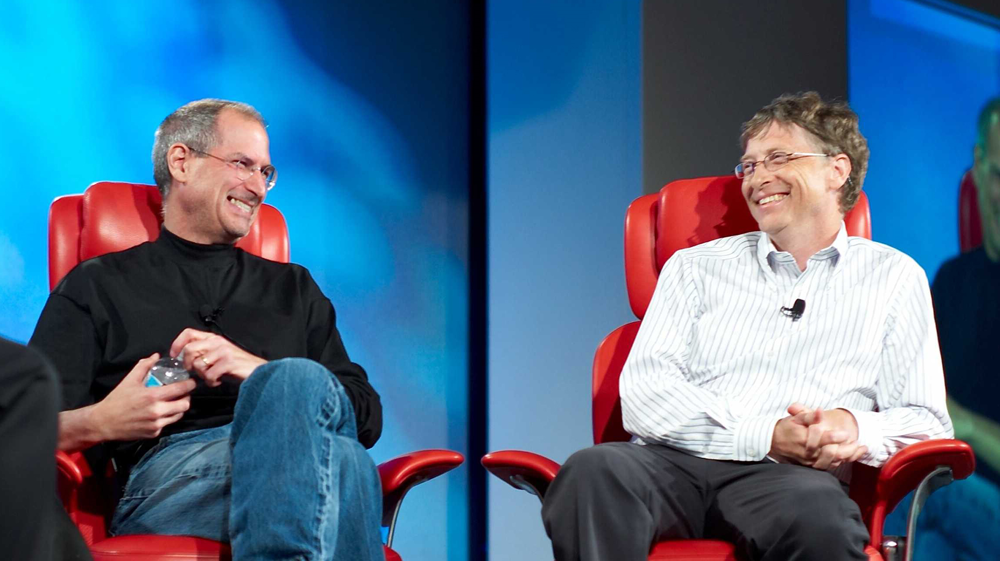

Dos monstruos un reino
Entre 1975 -1976 nace dos de las empresas mas grande de la historia que cambiaria el mundo de la tecnologia para siempre. Dirigido por Sr. Steve Jobs y Sr. Bill Gates. Descubre la increible historia de estas dos personajes que parece sacado de la pelicula.
Orígenes
Bill Gates y Steve Jobs iniciaron su complicada relación en la década de 1970, cuando Microsoft generaba gran parte de sus ingresos diseñando software para la Apple II. Sin embargo, la rivalidad entre estos dos titanes de la tecnología se intensificó a medida que ambos luchaban por conquistar el mercado emergente de las computadoras personales.
En la década de 1980, Jobs inició el desarrollo de la Macintosh original y quería que Microsoft creara una versión de BASIC y otros programas de aplicación. Gates aceptó la propuesta y se entusiasmó con la posibilidad de crear software gráfico para la Macintosh que llevara la computadora personal a un nuevo nivel.
El fundador de Microsoft viajaba a menudo a Cupertino para ver las demostraciones del sistema operativo Macintosh. Aunque no estaba impresionado, Microsoft destinó un amplio equipo para crear aplicaciones para la Mac. Y, a pesar de que Jobs sentía que no tenían buen gusto, los programadores de Microsoft fueron persistentes y mejoraron sus aplicaciones.
El choque
En ese entonces, Microsoft producía el sistema operativo conocido como DOS. A medida que Jobs y su equipo comenzaron a trabajar estrechamente con Microsoft, les preocupó que copiaran la interfaz gráfica de Macintosh e hicieran su propia versión. Tenían razón en preocuparse: Gates creyó que las interfaces gráficas eran el futuro, y que Microsoft tenía tanto derecho como Apple de utilizar la idea de la metáfora del escritorio, originalmente desarrollada por el centro de investigación de Xerox.
En su acuerdo original, Jobs había convencido a Gates que Microsoft no crearía software gráfico para nadie más hasta que hubiera transcurrido un año del debut de Macintosh en enero de 1983. Por desgracia para Apple, la compañía no contempló la posibilidad de que el lanzamiento de la Macintosh se demoraría un año.
Esto significó que Gates estaba en su derecho de anunciar, en noviembre de 1983, que Microsoft planeaba desarrollar un nuevo sistema operativo para las computadoras IBM llamado Windows, el cual incorporaba una interfaz gráfica con ventanas, íconos y un ratón para navegar.
Jobs no se quedó de brazos cruzados y decidió tomar medidas para enfrentar a su rival. Apple demandó a Microsoft por infringir sus derechos de autor y de patentes. La demanda alegaba que Microsoft había copiado el diseño y la interfaz gráfica de la Macintosh, que era una creación original.
El juicio se prolongó durante años y fue un tema candente en la industria de la tecnología. Aunque Apple argumentó que Microsoft había robado sus ideas, el juez dictaminó que Microsoft no había infringido los derechos de autor y que tenía el derecho de desarrollar un sistema operativo con una interfaz gráfica similar.
Una nueva colaboración
En 1997, Jobs regresó a Apple después de haber sido despedido de la compañía en 1985. En ese momento, la empresa de Cupertino estaba en una situación difícil y Bill Gates decidió invertir 150 millones de dólares en la compañía. La inversión ayudó a la tecnológica a salir adelante y se convirtió en un punto de inflexión para la compañía.
A pesar de la rivalidad entre ambos empresarios, Steve Jobs resaltó la participación de Bill Gates en el desarrollo de nuevo software para Apple. Esto tomó por sorpresa a muchos adeptos de la marca de la manzana quienes, durante una keynote de Jobs, recibieron al fundador de Microsoft con abucheos.
Jobs también tuvo palabras amables para Gates en su autobiografía. "Bill es un genio y lo respeto enormemente", escribió. "Aunque estamos compitiendo ferozmente, también aprendemos unos de otros. Bill y yo nos hemos mantenido en contacto a lo largo de los años, y estoy muy agradecido por su amistad y por la ayuda que nos brindó en momentos críticos de la historia de Apple".
Legado
Tras el fallecimiento de Jobs en 2011, Bill Gates recordó a su alguna vez rival con unas palabras en su blog oficial, Gates Notes: "Me entristece enormemente la noticia de la muerte de Steve Jobs. Melinda [French Gates, su esposa en ese entonces] y yo damos nuestro más sentido pésame a su familia y amigos, y a todas las personas que Steve ha tocado a través de su trabajo".
"Steve y yo nos conocimos hace casi 30 años, y hemos sido colegas, competidores y amigos durante más de la mitad de nuestras vidas", agrega el texto. "El mundo rara vez ve a alguien que haya tenido el profundo impacto que ha tenido Steve, cuyos efectos se dejarán sentir durante muchas generaciones".
"Para los que hemos tenido la suerte de trabajar con él, ha sido un gran honor. Echaré muchísimo de menos a Steve", cierra la entrada del blog.
La rivalidad entre Steve Jobs y Bill Gates se ha convertido en un mito en la historia de la tecnología. Aunque tuvieron momentos de conflicto, también colaboraron en algunos proyectos y se respetaron mutuamente. Sus empresas, Apple y Microsoft, han tenido un impacto enorme en la industria de la tecnología y han cambiado el mundo tal como lo conocemos hoy.